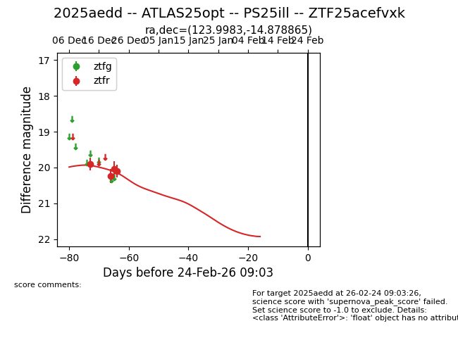
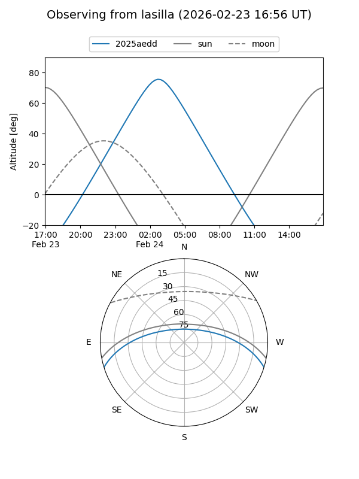
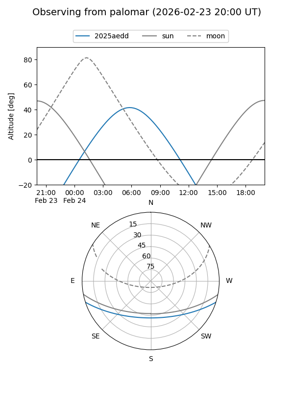
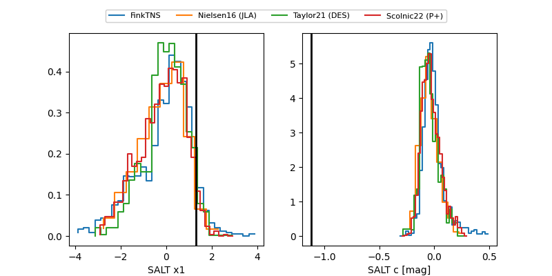

2025aedd
Target 2025aedd at 2025-12-31 16:59
Aliases and brokers:
FINK:
Lasair:
ALeRCE:
TNS:
YSE:
alt names
ZTF25acefvxk (ztf,fink_ztf)
2025aedd (tns,yse)
ATLAS25opt (atlas)
PS25ill (panstarrs)
Coordinates:
equatorial (ra, dec) = 123.9983,-14.87886
equatorial (HMS+DMS) = 08:15:59.60,-14:52:43.91
galactic (l, b) = (236.1909,+11.13426)
Flags:
Photometry:
last ztfr=20.09
4 ztfr detections
Lightcurve

Visibility


Additional plots
